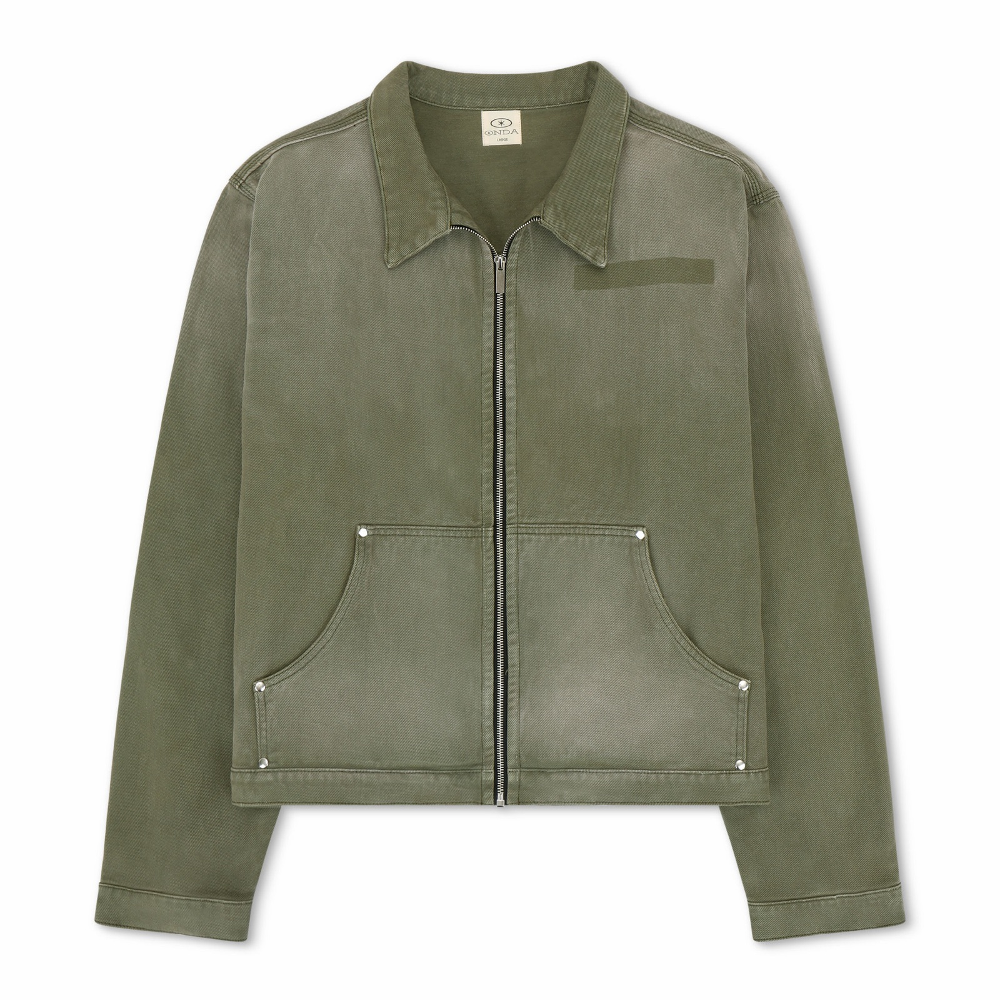
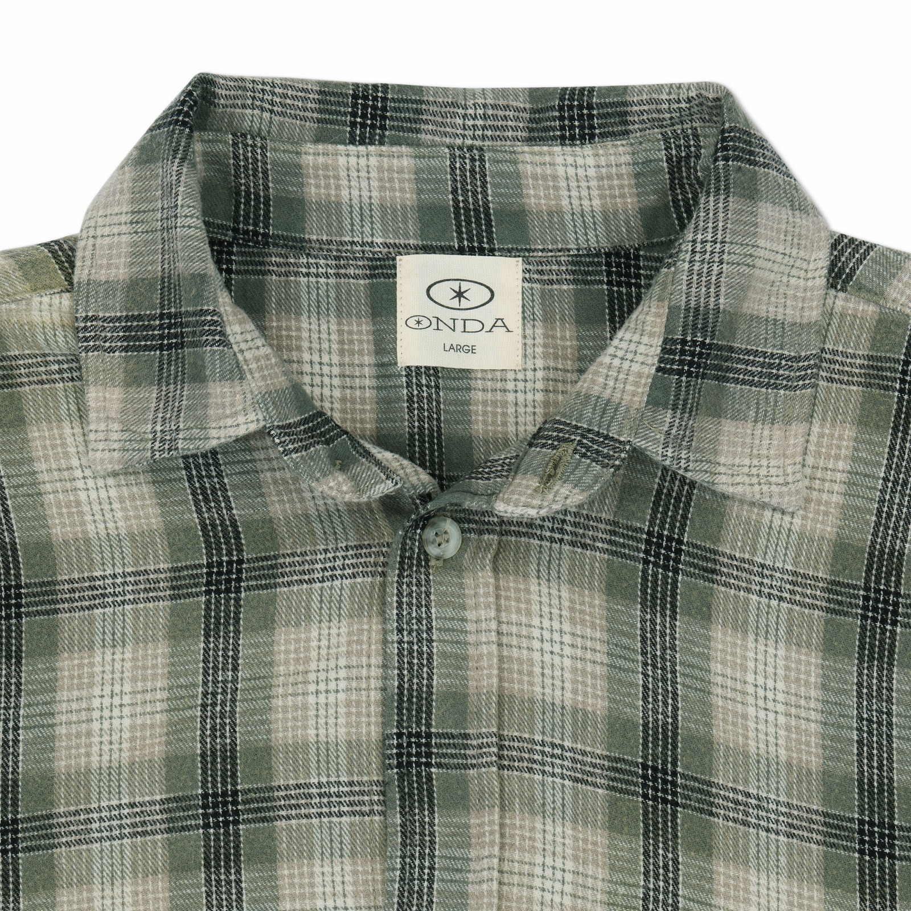
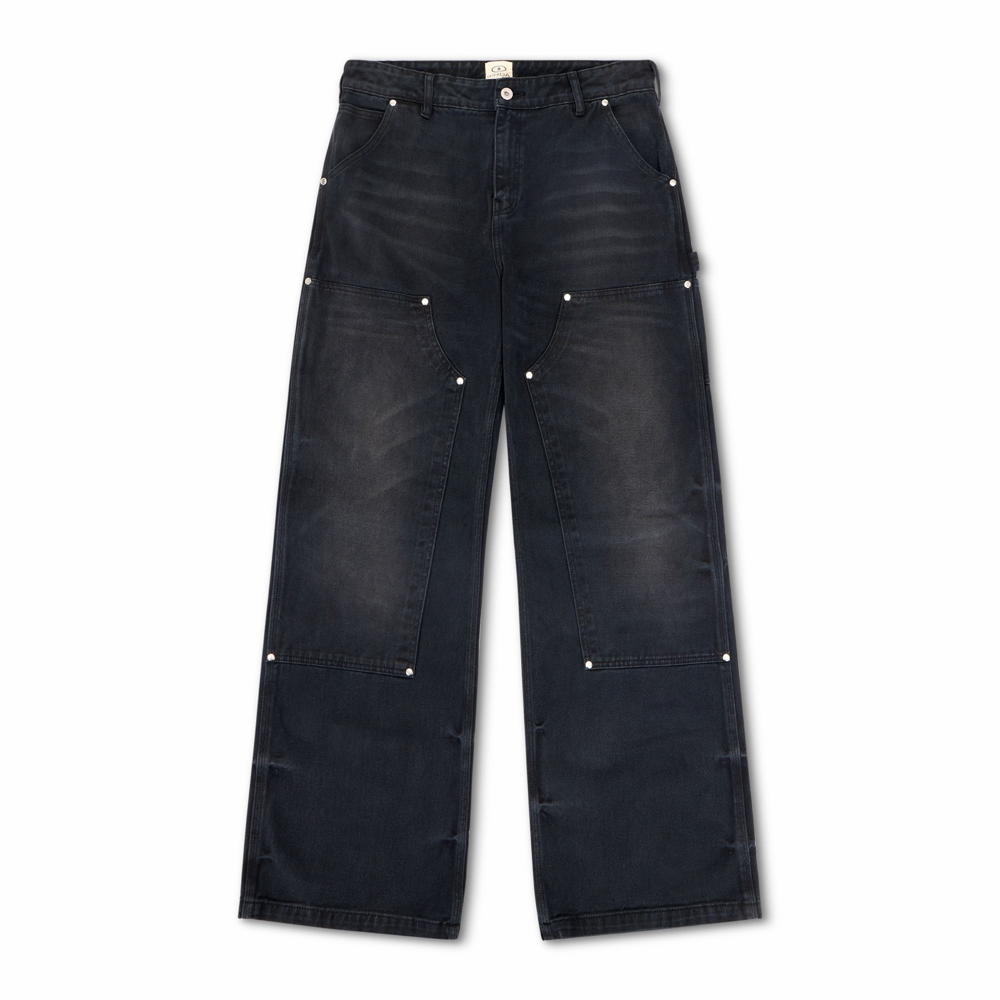
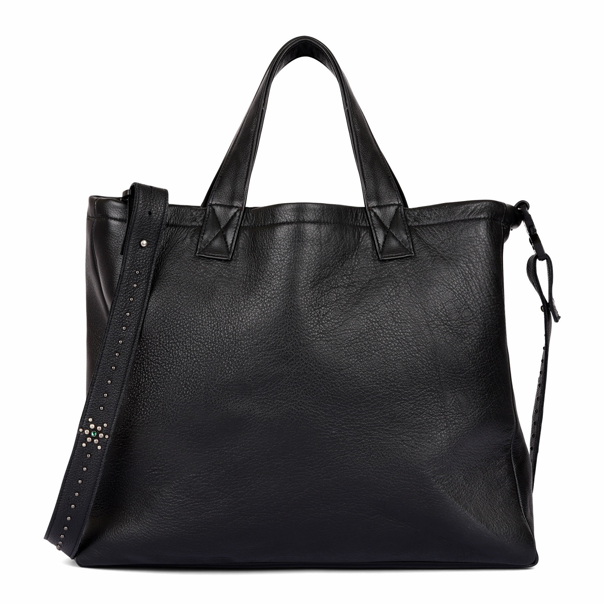
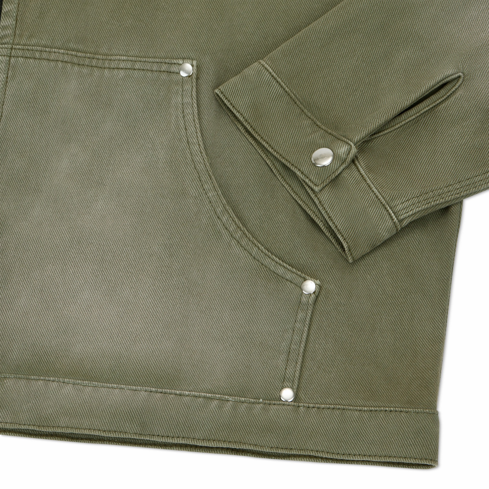
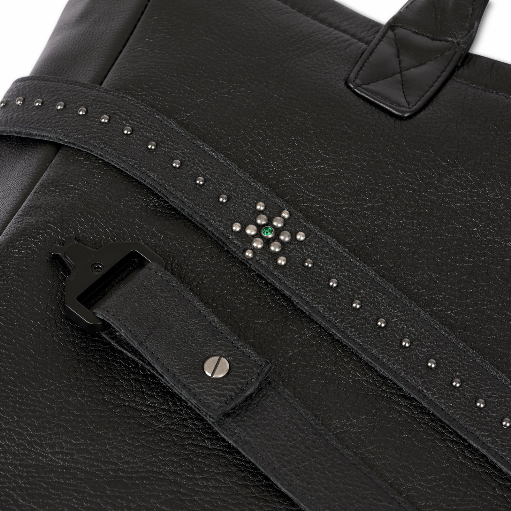
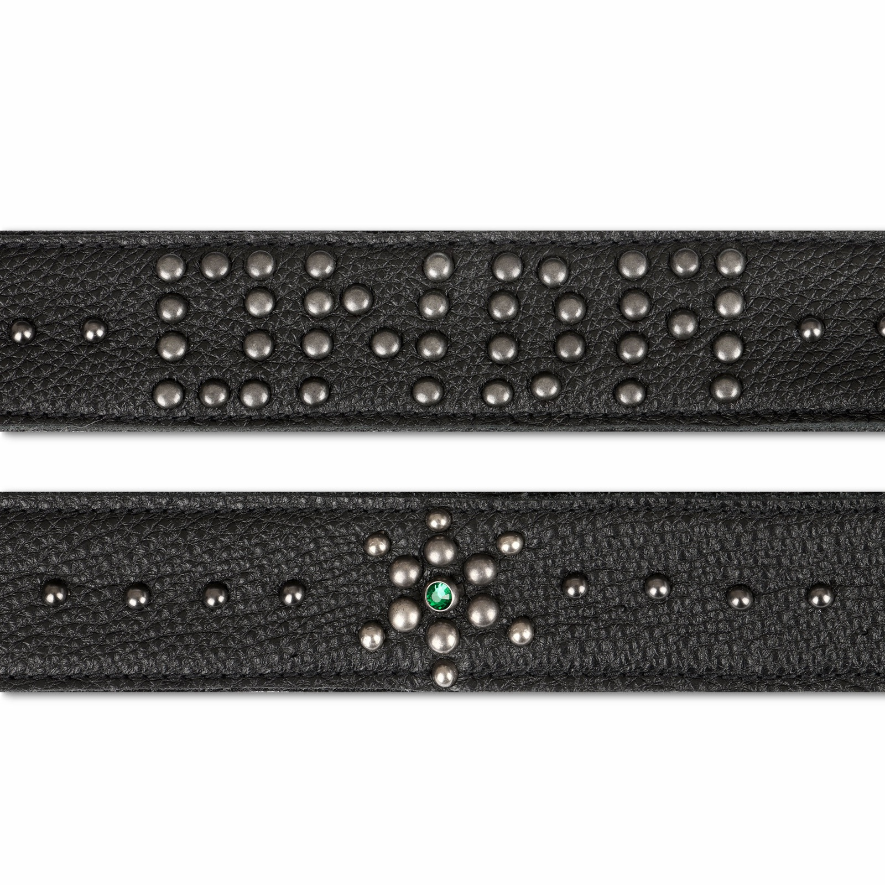

01
headless-ads-manager
Drive Meta Ads from code, not the Ads Manager UI. Read-safe by default, with two explicit gates standing between you and any live write.
Little bit of everything and a lot of nothing. No pitch, no feed — just the work: goods that got made, code that got shipped, keys that hold.
A goods line made for real — garment-dyed twill, brushed flannel, carpenter denim, full-grain leather. Studio shots of the actual pieces.







Built slowly over long agent sessions, polished until safe to hand to a stranger. Read-only by default; nothing writes without being asked twice.
Drive Meta Ads from code, not the Ads Manager UI. Read-safe by default, with two explicit gates standing between you and any live write.
Validator nodes running on the Post Fiat ledger. This domain vouches for them — the signed proof is served from this very site.
nHDEUdawsDpQYxKNohxTaHBVnfdnjSwsPGX5vtRN7m62NvEuxJYF